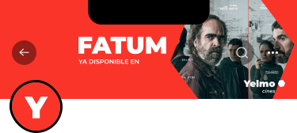

Redes sociales
Las redes sociales en Yelmo Cines es un apartado muy importante de las aplicaciones, debido a la capacidad que tienen estas de publicitar nuestro servicio y acercarnos al público más joven en las plataformas que más consumen.
Twitter es una red social que se enfoca en mensajes cortos. La apariencia de Yelmo Cines se refleja en todas las publicaciones. La foto de perfil con los colores corporativos y la “Y” permite identificar claramente la página.
Banner usuario tw
Respecto a la imagen del cover del usuario de Yelmo cines debe contener poco texto, por lo que se muestra de manera óptima en todos los dispositivos y tamaños de pantalla. Para que la información importante de la imagen no se oculte, se debe tener en cuenta el procedimiento de recorte de la plataforma cuando se trata de colocar la imagen de portada. Todo esto siguiendo el estilo de la marca de Yelmo Cines.
Retícula

La imagen de portada está cubierta por la imagen de perfil en la esquina inferior izquierda. En los dispositivos móviles, los elementos de interfaz adicionales se muestran en los espacios superior, derecho e izquierdo. En estas ubicaciones, no se deben colocar elementos de imagen importantes, títulos o subtítulos.
Perfiles


Respecto a los post de Twitter, se incluirán videos de los tráiler, que también se subirán a Youtube, imágenes de las películas y post con el tratamiento de la marca. Los textos deben ir acompañados de emojis, los cuales hacen el tono de voz de la marca más distendido, divertido y cercano, siendo estas características, valores de la marca.
Youtube
YouTube se utiliza principalmente como plataforma de distribución de videos. El canal de Yelmo Cines es ideal como archivo público para videos de alta calidad de las películas y de las promociones y colaboraciones con actores y actrices. La apariencia de Yelmo Cines se refleja en todas las publicaciones. La foto de perfil con los colores corporativos y la “Y” permite identificar claramente la página.
Para que la información importante de la imagen no se oculte, se debe tener en cuenta el procedimiento de recorte de la plataforma cuando se trata de colocar la imagen de portada. A diferencia de la vista de escritorio, en la vista móvil o de aplicación la imagen del canal está recortada a la izquierda y a la derecha.
Perfil usuario youtube

Banner youtube

Todos los elementos deben colocarse en la imagen de tal manera que sean completamente visibles en todos los dispositivos finales, a pesar de cualquier recorte que pueda ocurrir. La imagen de portada utiliza el estilo de imagen de Yelmo Cines, siempre utiliza las dimensiones completas(2560 x 423) y contiene poco texto, por lo que se muestra de manera óptima en todos los dispositivos y tamaños de pantalla.
Se deben utilizar películas del momento proyectadas en Yelmo Cines usando una máscara del símbolo principal de yelmo, el hexágono, junto con el logotipo. Todo esto en un fondo de color para aportar más identidad a la cover.
En la vista de escritorio, la plataforma también ofrece la opción de insertar elementos de canales individuales , lo que permite enlaces al sitio web de Yelmo Cines o a áreas específicas del sitio web. De forma predeterminada, los elementos se pueden encontrar en la parte inferior derecha de la vista del escritorio. En la vista móvil, esta función no es compatible.
Miniaturas


Para identificar la diversidad de contenido de Yelmo en las miniaturas, se incluyen los símbolos con su color correspondiente como fondo del título y subtítulo del vídeo, creando así, más identidad de marca y permitiendo al usuario, identificar rápidamente la diversidad de contenido de videos promocionales de distintas salas, tráiler de películas o saludos del cast.
Miniaturas youtube
YouTube coloca varios elementos en la miniatura: en la búsqueda de videos, por ejemplo, se agrega un código de tiempo, y en la vista de lista de reproducción, se agrega una superposición a la derecha, con la cantidad de videos y un ícono. Por eso, hemos creado unas guías que permitan crear tanto concordancia entre unas con otras y evitando que se pierda información con los elementos que incluye Youtube.